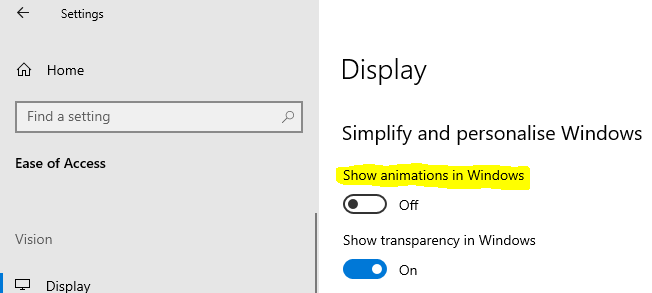
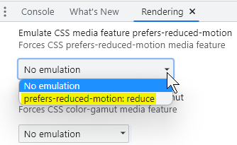

People with vestibular (inner ear) disorders need control over movement triggered by interactions. Movement can trigger vestibular disorder reactions, including distraction, dizziness, headaches and nausea.
WCAG requires (at Level AAA) that motion animation triggered by interaction can be disabled unless the animation is essential to the functionality or the information being conveyed.
Moving new content into the viewport is essential for scrolling. The user controls the essential scrolling movement, so it is allowed.
If scrolling a page causes elements to move (other than the essential movement associated with scrolling), it's problematic.
Parallax scrolling is also problematic. It occurs when scrolling backgrounds move at a different rate to foregrounds.
WCAG recommends choosing one of three alternatives for reducing the chances of triggering a vestibular disorder:
prefers-reduced-motion media query:
CSS
Code begins
@media (prefers-reduced-motion: reduce) {
/* CSS to disable motion goes here */
}Code ends
CSS offers a prefers-reduced-motion media query that respects user settings for motion.
This example demonstrates a :hover and :focus jiggling motion on a button. It's disabled when both:
prefers-reduced-motion CSS Media Query is set to reduce, and Example: Motion triggered by user interaction
CSS
Code begins
button:focus, button:hover {
animation: shake 0.82s cubic-bezier(.36,.07,.19,.97) both;
}
@media (prefers-reduced-motion: reduce) {
button:focus, button:hover {
animation: none;
}
}Code ends
Note that Windows 10 has the option to turn off "Show animations in Windows":
Example begins

Example ends
You can instead emulate the operating system's reduced motion feature in a browser that offers the option. For instance, in Chrome's Tools menu, the Rendering submenu offers "Emulate CSS media feature prefers-reduced-motion". Activating that option is equivalent to changing the operating system's setting.
Example begins

Example ends
Parallax scrolling occurs when backgrounds move at a different rate to foregrounds. It involves extra non-essential animations when the user scrolls. Decorative elements move horizontally when the essential page content is scrolled vertically. For some people, this can trigger vestibular disorders including dizziness, nausea and headaches.
display: none, keyboard users may not be able to access the hidden parts of the content.Example: Parallax Scrolling
Source: Deque Bad example: Parallax
Background videos or animations provide extra information and enhancement to web content. If any critical information is conveyed in the background video, then the video must be fully accessible, with captions and a descriptive transcript
Example begins
Example ends